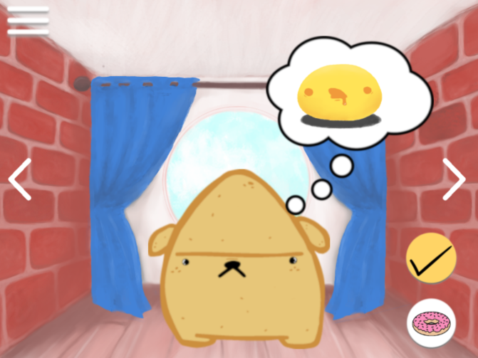
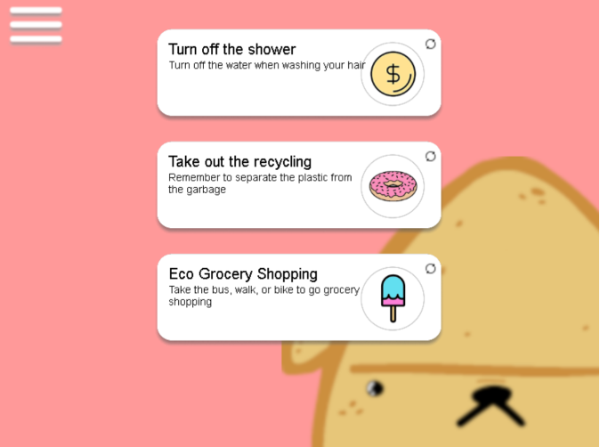
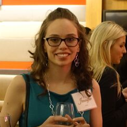

What is Icopico?
Icopico is a game that helps you integrate ecologically restorative action into your routine.
By completing easy, daily sustainability tasks, you help your very own Icopico pet grow!
What kind of pet will your Icopico grow into?
How to Play

1) You will first need to choose your pet.
Which Icopico best represents
you?

2) Like any pet, your Icopico needs food
and attention. Make sure to
maintain its hunger and happiness!

3) When you complete tasks, your Icopico
will gain activity points.
These new sustainability tasks appear every day.

4) As you complete tasks and tend to your
Icopico, it may gain enough
experience to evolve...!
Meet the Team!

Jennifer Hobbs
Jennifer's primary role is game logic design and development.
She is a student at BCIT in the technical programming option.
She enjoys creating games in Unity and her favorite programming language is C#.
In her spare time she can be found carrying you in League of Legends.

Joanna Ho
Joanna is a BCIT computing student in the technical programming option.
She spends her time enjoying the creative process in game dev, solving coding problems and
hoarding
succulent treats.

Mikhaela Layon
Mikhaela worked on setting up the game's MySQL database and back-end. She aims to create an
impact on the community by providing technical solutions and bringing people together. When
she's not typing away on her laptop, she's either watching a movie, drinking tea, or exploring
Vancouver.
Louis Rivest
As a student in Computer Systems Technology, Louis is always looking for ways to broaden his
skill set. When he isn't doodling, you will usually find him testing new recipes in the kitchen.
Louis is responsible for some of the UI, CSS/Javascript design, and art assets.
Nicole Jingco
Nicole is one of the team's designers in charge of the UI, Pet, CSS and JavaScript design.
She likes to sleep, eat and is an avid Esports supporter, mainly for the Vancouver Titans
Overwatch team. She consumed the most ice cream during the project.